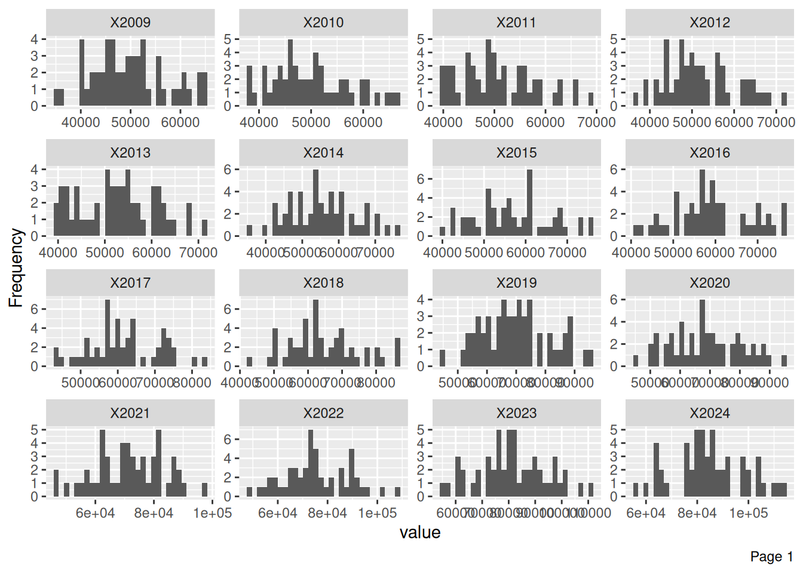
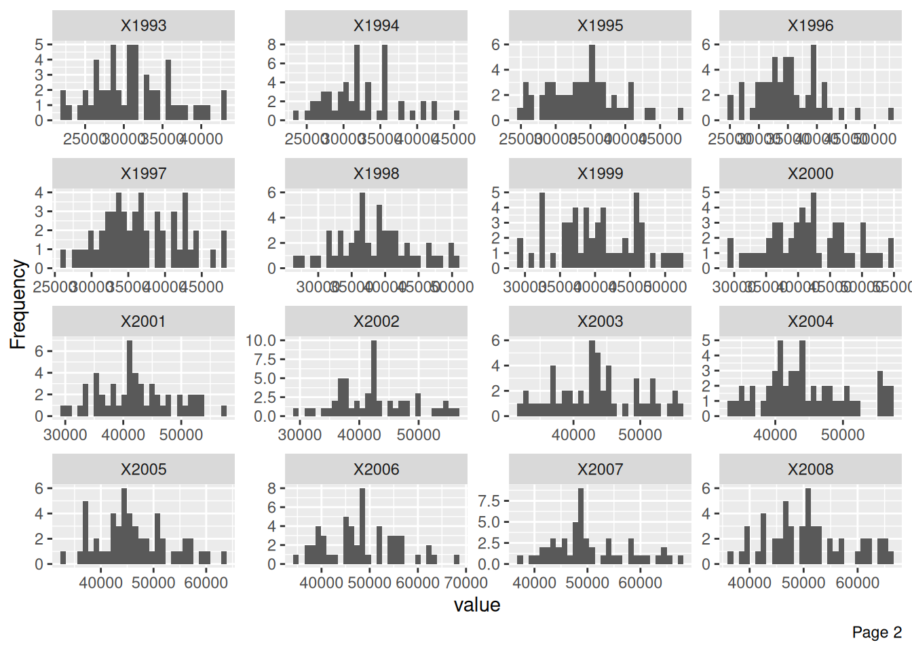
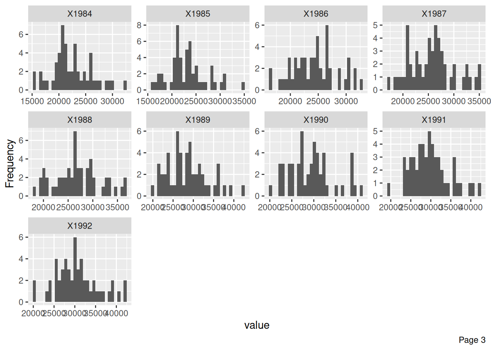

I explored the Median Household Income by State from Historical Income Tables: Households from United States Census Bureau. Some data wrangling first.
Code
library(readr)library(dplyr)library(janitor)library(DataExplorer)# Read file as raw, without automatic headersraw_data <-read_csv("../data/raw/Median Household Income by State 1984 to 2024.csv",skip =7,col_names =FALSE,show_col_types =FALSE)# We keep the messy first rows because we need them to identify the real headers.# Check the first few rowsraw_data[1:4, 1:12]
# Extract the first two rowsyear_row <-as.character(unlist(raw_data[1, ]))type_row <-as.character(unlist(raw_data[2, ]))
Code
# Find the state columnstate_col <-1# Find only the columns labeled "Median income"median_cols <-which(type_row =="Median income")# Keep State + median income columns onlyHousehold_median <- raw_data[-c(1, 2), c(state_col, median_cols)]
# Remove State column for numeric analysisnumeric_df <- Household_median[, -1]plot_histogram(numeric_df)



Source Code
---title: "Jack D."---I explored the Median Household Income by State from Historical Income Tables: Households from United States Census Bureau.Some data wrangling first.```{r}library(readr)library(dplyr)library(janitor)library(DataExplorer)# Read file as raw, without automatic headersraw_data <-read_csv("../data/raw/Median Household Income by State 1984 to 2024.csv",skip =7,col_names =FALSE,show_col_types =FALSE)# We keep the messy first rows because we need them to identify the real headers.# Check the first few rowsraw_data[1:4, 1:12]```\```{r}# Extract the first two rowsyear_row <-as.character(unlist(raw_data[1, ]))type_row <-as.character(unlist(raw_data[2, ]))```\```{r}# Find the state columnstate_col <-1# Find only the columns labeled "Median income"median_cols <-which(type_row =="Median income")# Keep State + median income columns onlyHousehold_median <- raw_data[-c(1, 2), c(state_col, median_cols)]```\```{r}# Rename columnsincome_years <- year_row[median_cols]colnames(Household_median) <-c("State", income_years)```\```{r}Household_median <- Household_median %>%mutate(across(-State, ~as.numeric(gsub(",", "", .))) )``````{r}Household_median$State[1] <-"United States (Median average)"Household_median <- Household_median[1:52, ]Household_median <- Household_median %>%select(-matches("\\((39|40)\\)$"))colnames(Household_median) <-gsub("\\s*\\(.*\\)", "", colnames(Household_median))head(Household_median)```The actual EDA begins below.```{r}Household_median %>%summarise(across(where(is.numeric), list(mean = mean,median = median,min = min,max = max ), na.rm =TRUE))``````{r}introduce(Household_median)``````{r}# Remove State column for numeric analysisnumeric_df <- Household_median[, -1]plot_histogram(numeric_df)```